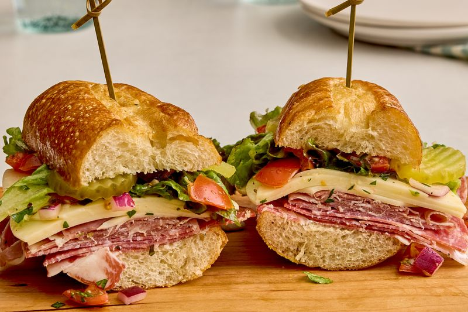

Back to homepage
Lasagna

Description
This is a classic, rich, and savory homemade lasagna. Layered with a hearty meat sauce, creamy ricotta cheese, and melted mozzarella, it is the ultimate comfort food perfect for family gatherings or meal prep.
Making it from scratch takes a bit of time, but the deep flavors from the slow-simmered sauce make every single step worth it.
Ingredients
- 12 lasagna noodles
- 1 lb ground beef or Italian sausage
- 1 can (28 oz) crushed tomatoes
- 2 tablespoons tomato paste
- 2 cloves garlic, minced
- 15 oz ricotta cheese
- 1 egg (beaten)
- 4 cups shredded mozzarella cheese
- 1/2 cup grated Parmesan cheese
- Dried oregano, salt, and black pepper to taste
Steps
- Cook the lasagna noodles in boiling salted water according to the package instructions, then drain and set aside.
- In a large pan, brown the ground beef with garlic over medium heat. Drain excess fat.
- Add the crushed tomatoes, tomato paste, oregano, salt, and pepper to the pan. Simmer on low heat for 20 minutes to let the flavors combine.
- In a medium bowl, mix the ricotta cheese with the beaten egg and a pinch of salt.
- Preheat your oven to 375°F (190°C).
- Assemble the lasagna in a 9x13 inch baking dish: spread a thin layer of meat sauce on the bottom, followed by a layer of noodles, a layer of ricotta mixture, and a sprinkle of mozzarella. Repeat layers.
- Top the final layer of noodles with the remaining meat sauce, mozzarella, and Parmesan cheese.
- Cover with foil and bake for 25 minutes. Remove the foil and bake for an additional 15 minutes until the cheese is bubbly and golden brown.
- Let it rest for 10-15 minutes before slicing and serving.